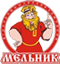

Экспорт высококачественных продуктов зернопереработки
Ru En
Тел.: +7 (3852) 538-831
afm@altaimills.ru
Учредители
-
ЗАО Алейскзернопродукт Имени С.Н. Старовойтова
-

Агропромышленная компания Мельник
-
Объединение Мельник
-
ОАО Ключевской
элеватор
Продукция Перейти в полный каталог
-
Мука пшеничная, мука пшеничная витаминизированная
Благодаря высокому качеству алтайской пшеницы и хорошему техническому оснащению мельниц, мы имеем возможность производить лучшую муку в России.
-
Масло подсолнечное, масло подсолнечное витаминизированное
Масло вырабатывается из отборных семян подсолнечника методом холодного отжима без использования химических веществ и консервантов.
-
Горох и другие крупы
Предприятия учредителей компании «Алтайские мельницы» выпускают широкий ассортимент круп.
Алтайский край
Территория 169.1 тыс.км2
Население 2602 тыс.чел.
Сельхозугодья 11 млн. га
Из них пашни 7 млн. га
Мощность по выпуску готовой продукции в зерне 3925 тыс. тонн
ООО “Алтайские Мельницы”
Наша миссия:
С ответственностью и гордостью представлять знания и опыт алтайских зернопереработчиков и зернопроизводителей, а также их продукцию и бренды на мировом рынке;
Осуществлять поставкми полезного, экологически чистого и безопасного продовлльствия, выполненяя принимаемые на себя обязательства на высоком уровне и точно в срок;
Поддерживать миссию России как гаранта продовлольственной безопасности в мире.
-
Основные направления экспорта:
таджикистан
кыргызтан
армения
кндр
китай
индонезия
-
Перспективные направления для экспорта алтайской продукции:
средняя азия
юго-восточная азия
ближний восток
африка
География поставок
Факты качества
ООО “Алтайские мельницы” является членом следующих организаций:
-
Российский Зерновой Союз
-
Алтайская
Торгово-Промышленная Палата -
Союз Зернопереработчиков Алтая
ООО «Алтайские мельницы» принимает участие в работе Межправительственных Комиссий (МПК) по торгово-экономическому и научно-техническому сотрудничеству между РФ и зарубежными странами (того более 20 стран - импортеров продукции зернопереработки).
В итоговых Протоколах МПК российская сторона рекомендует ООО «Алтайские мельницы» в качестве поставщика муки и других продуктов зернопереработки из России.
Участник международных конференций, встречах деловых кругов, участник Деловых Советов по сотрудничеству между РФ и зарубежными странами.
Официальный поставщик продовольствия для реализации гуманитарных операций Всемирной Продовольственной программы ООН (UN WFP)
Партнер ФГБУ «Агентство «Эмерком» (МЧС РФ)
Новости компании:
-
19.06.2014г.
Достигнуты договоренности о дальнейших поставках муки в КНДР
-
19.06.2014г.
Вячеслав Дворник принял участие в межправительственной комиссии Россия - КНДР
-
19.06.2014г.
Интервью Виталия Копытова в турецком журнале Miller Magazine